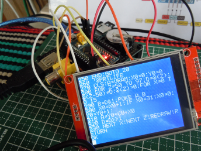

1. 仕様およびシステム構成
1.1. はじめに
「豊四季Tiny BASIC for Arduino STM32」は、 Tetsuya Suzuki氏が開発・公開している「TOYOSHIKI Tiny BASIC for Arduino」をBlue Pillボード(STM32F103C8T6搭載)に移植・機能拡張を施した、Tiny BASICインタープリタ です。
昔風の「電源入れて即、BASIC動くパソコン」、
「安価で強力・自作・改造出来るパソコン」 を目指し、
安価な割に高性能のBluePillボード、開発環境にArduinoを採用しました。
(ただし、ボードがマイナー、Arduino STM32が分かりにくいですが.. ^^;)
配布パッケージに添付のファームウェアをボードに書き込んでの利用、
Arduino IDEでスケッチをコンパイル＆書き込みでの利用が可能です。
- 主な拡張機能
-
-
プログラム編集・開発機能の強化
-
フルスクリーンエディット機能
(シリアル、NTSC、OLED、TFT画面) -
プログラム保存機能(内部メモリ、SDカード)
-
-
周辺機器のサポート
-
TV(NTSC)/OLED/TFTディスプレイ
-
PS/2キーボード(日本語キーボード、USキーボード)
-
MMC互換カード
-
単音出力
-
RTCバックアップ電池
-
-
入出力・制御機能
-
デジタル入出力、PWM出力、アナログ入力
-
I2Cバス通信
-
シリアル通信
-
ファイル入出力
-
-
- 開発環境
-
Arduino 1.8.5以降 + Arduino STM32パッケージ
- 必要ハードウェア
-
Blue Pillボード(STM32F103C8T6搭載)
本マニュアルでは、「豊四季Tiny BASIC for Arduino STM32」の仕様を中心に解説します。
別紙「コマンドリファレンス」では、BASICインタープリタで利用できる各コマンドについて解説いたします。
- 製作者について
-
製作者名：たま吉さん
注意：『「たま吉」さんの飼い主(下僕?)』の略です。
決して、自分に「さん」付けている訳ではありません。
単なる、猫の「たま吉」さん の飼い主です。
1.2. 関連情報
- 「豊四季タイニーBASIC（オリジナル版）」に関する情報
-
-
開発者公開ホームページ
電脳伝説Vintagechips 豊四季タイニーBASIC確定版
https://vintagechips.wordpress.com/2015/12/06/豊四季タイニーbasic確定版/ -
開発者公開リソース
TOYOSHIKI Tiny BASIC for Arduino
https://github.com/vintagechips/ttbasic_arduino/ -
開発者が執筆した関連書籍
「タイニーBASICをCで書く」
http://www.socym.co.jp/book/1020
-
- 「豊四季タイニーBASIC for Arduino STM32」に関する情報
-
-
公開サイト 豊四季タイニーBASIC for Arduino STM32
https://github.com/Tamakichi/ttbasic_arduino_stm32 -
Arduino STM32に関する情報
・Arduino STM32 公式HP(モージュール配布サイト)
rogerclarkmelbourne/Arduino_STM32 https://github.com/rogerclarkmelbourne/Arduino_STM32 -
Arduino STM32 公式フォーラム
http://www.stm32duino.com/ -
STM32duino wiki
http://wiki.stm32duino.com -
Blue Billボードに関する情報
http://wiki.stm32duino.com/index.php?title=STM32F103_boards
-
- その他の情報公開サイト
-
-
DEKOのあやしいお部屋 - STM32F103C8T6
http://ht-deko.com/arduino/stm32f103c8t6.html
-
1.3. 著作権・利用条件
「豊四季タイニーBASIC for Arduino STM32」の著作権は移植・機能拡張者の「たま吉さん」、オリジナル版開発者の「Tetsuya Suzuki氏」にあります。
本著作物の利用条件は、オリジナル版「豊四季タイニーBASIC」に従うものとします。
オリジナル版はGPL（General Public License）でライセンスされた著作物であり、「豊四季タイニーBASIC for Arduino STM32」もそれに従い、GPLライセンスされた著作物となります。
更に利用条件として以下を追加します。
-
不特定多数への再配布においてはバイナリーファイルのみの配布を禁止、必ずソースを添付すること
-
「豊四季タイニーBASIC for Arduino STM32」の明記、配布元のURLを明記する
-
営利目的のNAVER等のまとめサイト(まとめ者に利益分配のあるもの)へのいかなる引用の禁止
補足事項
オリジナル版において開発者Tetsuya Suzuki氏は次の利用条件を提示しています。
-
TOYOSHIKI Tiny BASIC for Arduino の記載内容
https://github.com/vintagechips/ttbasic_arduino
©2012 Tetsuya Suzuki GNU General Public License
-
豊四季タイニーbasicリファレンスを公開」の記載内容
https://vintagechips.wordpress.com/2012/06/14/
豊四季タイニーBASICがもたらすいかなる結果にも責任を負いません。
著作権者の同意なしに経済的な利益を得てはいけません。
この条件のもとで、利用、複写、改編、再配布を認めます。
1.4. システム構成
「豊四季Tiny BASIC for Arduino STM32」では、次の構成での利用が可能です。
赤い網掛け部分は利用においての最小限の構成です。
USB-シリアル経由ターミナルコンソール上でのプログラム入力が可能です。
周辺機器は必須ではありません。
表示デバイスのNTSC、OLED、TFT液晶は同時利用は出来ません。
1.4.1. バリエーション
「豊四季Tiny BASIC for Arduino STM32」では、次の組み合わせの利用環境が構築出来ます。

1.4.2. 個別構成
4種類の基本構成
(1)シリアルターミナルコンソール
(2)NTSC(TVモニター） + PS/2キーボード
(3)OLEDディスプレイ + PS/2キーボード
(4)TFTディスプレイ + PS/2キーボード
「豊四季Tiny BASIC for Arduino STM32」ではこの４タイプの構成で利用するために、次のコンパイル済ファームウェアを用意しています。
-
シリアルターミナルコンソール版 ファームウェア
-
NTSC（ビデオ出力）版 ファームウェア
-
OLED SH1106 SPI接続版 ファームウェア
-
OLED SH1106 I2C接続版 ファームウェア
-
OLED SSD1306/SSD1309 SPI接続版 ファームウェア
-
OLED SSD1306/SSD1309 I2C接続版 ファームウェア
-
TFT I ILI9341 SPI接続版 ファームウェア
1.4.3. 個別詳細
シリアル接続版
USBポート・シリアルポート接続のシリアルコンソール画面を使った最小限のプログラミング環境です。
-
- 特徴
-
-
標準装備のUSBポートにてパソコンに接続し、ターミナルソフト（TeraTerm等）を使って、
プログラム開発を行うことが出来ます。 -
ターミナル画面上では全角文字（シフトJIS）が利用出来ます。
-
シリアルコンソール画面は、USBシリアル接続の他、
ボード上のシリアルポートに随時切り替えて使うことも可能です。
起動時に選択することも出来ます（詳細は「起動時のコンソール画面の選択」を参照して下さい）。
-
コンソール画面は横文字数、縦文字数の変更が可能です。デフォルトは80桁・２４行です。
-
スクリーン編集機能の利用が可能です（詳細は「編集操作キー」を参照して下さい）。
-
COLOR文による文字色指定、LOCATE文による表示位置指定等のスクリーン制御をサポートしています。
-
必要に応じて、SDカードリーダー、圧電スピーカー、内蔵RTC用バックアップ電池を追加利用出来ます。
-
NTSC版
NTSC対応モニターとPS/2キーボードを使う環境です。

- 特徴
-
-
NTSCビデオ出力画面をプログラム作成画面（コンソール画面）として利用します。
-
シリアルコンソール版と同等のスクリーン編集機能の利用が可能です。
-
画面の文字サイズの変更が可能です。
-
コマンドによるグラフィック描画をサポートします。
-
SDカードからビットマップ画像をロードして表示すること出来ます。
-
-
文字入力はPS/2キーボードを利用します。カタカナのローマ字入力をサポートします。
-
シリアルポートを補助入出力に利用出来ます。
-
NTSCビデオ画面に表示するテキスト文字列は、シリアルポート（デフォルトではUSBシリアルポート）にも出力されます。
-
シリアルポートからの入力は、PS/2キーボードと並行してキーボード入力として受付ます。
-
NTSCビデオ出力画面表示が行えない状況でも、シリアルポートからのコマンド入力を行うことが可能です。
-
シリアルポートを利用してパソコンからのBASICプログラムの取り込みや、パソコンへの転送も用意に行うことが出来ます。
-
-
「シリアルターミナルコンソール版」の機能を包含します。
CONSOLEコマンドにより、いつでもシリアルターミナルコンソールモードへ移行することが出来ます。NTSCビデオ画面の利用に戻ることが出来ます。
-
OLED版
OLEDモジュールを表示機として利用する環境です。PS/2キーボードを併用します。
- 特徴
-
-
OLED画面をプログラム作成画面（コンソール画面）として利用します。
-
シリアルコンソール版と同等のスクリーン編集機能の利用が可能です。
-
画面表示の向きの変更、画面の文字サイズの変更が可能です。
-
コマンドによるグラフィック描画をサポートします。
-
SDカードからビットマップ画像をロードして表示すること出来ます。
-
-
文字入力はPS/2キーボードを利用します。カタカナのローマ字入力をサポートします。
-
シリアルポートを補助入出力に利用出来ます。
-
OLED画面に表示するテキスト文字列は、シリアルポート（デフォルトではUSBシリアルポート）にも出力されます。
-
シリアルポートからの入力は、PS/2キーボードと並行してキーボード入力として受付ます。
-
OLED画面に表示が行えない状況でも、シリアルポートからのコマンド入力を行うことが可能です。
-
シリアルポートを利用してパソコンからのBASICプログラムの取り込みや、パソコンへの転送も用意に行うことが出来ます。
-
-
「シリアルターミナルコンソール版」の機能を包含します。
CONSOLEコマンドにより、いつでもシリアルターミナルコンソールモードへ移行することが出来ます。OLED画面の利用に戻ることが出来ます。
-
TFT版
TFTカラーグラフィック液晶とPS/2キーボードを使う環境です。
カラー表示をサポートします。

- 特徴
-
-
TFT画面をプログラム作成画面（コンソール画面）として利用します。
-
シリアルコンソール版と同等のスクリーン編集機能の利用が可能です。
-
画面表示の向きの変更、画面の文字サイズの変更が可能です。
-
コマンドによるグラフィック描画をサポートします。
-
SDカードからビットマップ画像をロードして表示すること出来ます。
-
-
文字入力はPS/2キーボードを利用します。カタカナのローマ字入力をサポートします。
-
シリアルポートを補助入出力に利用出来ます。
-
TFT画面に表示するテキスト文字列は、シリアルポート（デフォルトではUSBシリアルポート）にも出力されます。
-
シリアルポートからの入力は、PS/2キーボードと並行してキーボード入力として受付ます。
-
TFT画面に表示が行えない状況でも、シリアルポートからのコマンド入力を行うことが可能です。
-
シリアルポートを利用してパソコンからのBASICプログラムの取り込みや、パソコンへの転送も用意に行うことが出来ます。
-
-
「シリアルターミナルコンソール版」の機能を包含します。
CONSOLEコマンドにより、いつでもシリアルターミナルコンソールモードへ移行することが出来ます。TFT画面の利用に戻ることが出来ます。
-
1.5. ソフトウェア仕様
| 項目 | 概要 | |
|---|---|---|
プログラミング環境 |
CUI（キャラクユーザーインタフェース) |
|
画 |
NTSCキャラクタ表示画面 |
37×27文字、28×13文字、28×13文字、24×13文字 |
NTSCグラフィック表示画面 |
224×216ドット、224×108ドット、112×108ドット |
|
ターミナルスクリーン画面 |
16×10文字 ～ 127文字×45文字の範囲で任意指定、全角対応（SJIS） |
|
OLEDキャラクタ表示画面 |
21×8文字、10×4文字、7×2文字（画面回転可能） |
|
OLEDグラフィック表示画面 |
128×64ドット（画面回転可能） |
|
TFTキャラクタ表示画面 |
53×30、26×15、17×10、13×7、10×6、8×5文字（画面回転可能） |
|
TFTグラフィック表示画面 |
320x240ドット（画面回転可能） |
|
Ｂ |
形式 |
整数型BASIC（符号付16ビット整数 -32768～32767） |
プログラム領域 |
4096バイト |
|
利用文字コード |
1バイトJISコード |
|
利用可能変数 |
変数名：208個 |
|
ユーザー開放 |
SRAM 1024バイト |
|
内部フラッシュメモリ |
250ワード（2バイト×250） |
|
1.6. ハードウエア仕様
| 項目 | 概要 |
|---|---|
動作クロック |
72MHz |
時計機能 |
内部RTC利用（電池によるバックアップ可能） |
映像出力 |
モノラル（２色白黒）NTSCビデオ出力 |
キーボード I/F |
PS/2 5V 対応（5Vトレラント ピン利用） |
サウンド |
圧電スピーカーによる単音モノラル再生 |
USB I/F |
DFU利用ファームウェア書込み |
シリアル通信 |
1チャンネル(3線 TX、RX、GND)：通信速度 ～921,600、データ長 8ビット、 |
I2Cインタフェース |
1チャンネル（マスター利用のみ） |
GPIO |
・デジタル入力 1ビット× 24ポート(最大) |
アナログ入力 |
9チャンネル(最大) 、分解能12ビット |
MMC互換カード |
FAT16 / FAT32 32Gバイトまで対応 |
OLEDディスプレイ |
対応モジュール SSD1306、SSD1309、SH1106コントローラ利用モジュール |
TFTディスプレイ |
対応モジュール ILI9341コントローラ利用グラフィック液晶モジュール |
1.7. 結線図
Blue Pillボードを使用した結線図です。
1.7.1. シリアル接続版
最小構成です。
単音出力が不要の場合、圧電スピーカーは省略可能です。
圧電スピーカーの端子は極性がありません。
- オプション
-
-
RTC用バックアップ電池
-
Dカードモジュールも必要に応じて追加できます。
-
1.7.2. NTSC版

PS/2キーボード用コネクタは、PS/2コネクタまたはUSBコネクタのどちらかを好みで選択して下さい。
1.7.3. OLED版
OLEDディスプレイは128×64ドット、搭載コントローラSSD1306、SSD1309、SH1106、インタフェースはI2C、SPIに対応の製品に対応しています。
SPI接続は、I2C接続よりも表示が高速です。
また、SPI接続において、コントローラSH1106は、SSD1306、SSD1309よりも高速です（早いクロック数で転送）。
I2C接続タイプ

| OLED端子 | BluePill端子 |
|---|---|
SDA |
PB7(SDA1) |
SCL |
PB6(SCL1) |
GND |
GND |
VCC |
3.3V |
SPI接続タイプ

| OLED端子 | BluePill端子 |
|---|---|
CS |
PB11 |
DS |
PB12 |
RES |
R(NRST) |
SDA |
PB15(MOSI2) |
SCK |
PB13(SCK2) |
VCC |
3.3V |
GND |
GND |
1.7.4. TFT版
| TFT端子 | BluePill端子 |
|---|---|
VCC |
3.3V |
GND |
GND |
CS |
PB11 |
RESET |
R(NRST) |
D/C |
PB12 |
SDI(MOSI) |
PB15(MOSI2) |
SCK |
PB13(SCK2) |
LED |
3.3V |
SDO(MISO) |
PB14(MISO2) |
1.7.5. SDカード対応
市販のプルアップ抵抗及び、ダンピング抵抗が組み込まれたモジュールの利用を推奨します。
TFT版では、TFTディスプレイのSDカードスロットも利用可能です。


| SDカードモジュール端子 | BluePill端子 |
|---|---|
GND |
GND |
MISO |
PA6(MISO1) |
CLK |
PA5(CLK1) |
MOSI |
PA7(MOSI1) |
SS |
PA4(NSS1) |
3.3V |
3.3V |
5V/3.3V変換レギュレータが乗っている製品の場合、5Vと3.3Vの端子がありますが、
5V端子に5Vを供給しないと動作しない場合があります。
その場合は5V端子にBluePillボードの5V端子を接続して下さい。
1.7.6. RTC用電池
RTC用バックアップ電池を利用することで、電源を切った状態でもRTCの時刻を保持することが出来ます。
以下の接続例を示します。利用するダイオードは、VF値が低い(0.5以下）ものであれば何でも良いです。
1.7.7. 部品表
| 部品 | 参考 | |
|---|---|---|
P |
Mini DIN 6pin メスコネクタ |
|
USBコネクタ |
||
抵抗 10kΩ × 2 |
||
N |
ＲＣＡジャック（黄） |
|
抵抗 240Ω |
||
抵抗 560Ω |
||
単 |
圧電スピーカー(圧電サウンダ) |
直径13mm程度のものがお手頃です。 |
O |
OLEDディスプレイ |
aitendo
OLEDモジュール（0.96/白色/I2C） [M096P4W] Aliexpress Aliexpressでのその他製品リスト |
T |
TFT(ILI9341)ディスプレイモジュール |
画面サイズが大きいほど高くなります。 Amazon経由、Aliexpress等海外通販サイト利用で安く入手可能です。 |
S |
SDカードモジュール |
このほか、Amazon、Aliexpress等海外通販サイト利用で安く入手可能です。 |
R |
3.3Vボタン電池 CR2032 |
ダイソー ボタン電池 CR2032 |
3V ボタン電池 CR2032用ホルダー |
||
ショートキーバリアダイオード |
||
電解コンデンサ 100μF |
||


1.8. ピンレイアウト
Blue Pillボードのピンレイアウトです。
-
コマンドや関数にてピンを指定する場合、ピン名称またはピン番号による指定が可能です。
-
利用する構成により、利用できるピンは異なります。
-
5Vトレラント対応ピンでは、5V系の信号入出力に接続可能です。
-
VBAT端子は内蔵RTCの外部電源によるバックアップに利用可能です。
-
BOOT1端子もPB2としてデジタルINPUT/OUTPUTに利用可能です。
1.9. ピン割り付け一覧
| ピン | 番号 | 用途 | 説明 |
|---|---|---|---|
PA0 |
0 |
アナログ入力、デジタルIN/OUT |
汎用 |
PA1 |
1 |
アナログ入力、デジタルIN/OUT |
NTSC 同期信号 汎用、NTSC版では占有(利用禁止) |
PA2 |
2 |
アナログ入力、デジタルIN/OUT |
汎用 |
PA3 |
3 |
アナログ入力、デジタルIN/OUT |
汎用 |
PA4 |
4 |
アナログ入力、デジタルIN/OUT、SPI(NSS) |
汎用、SDカード |
PA5 |
5 |
アナログ入力、デジタルIN/OUT、SPI(SCK) |
汎用、SDカード |
PA6 |
6 |
アナログ入力、デジタルIN/OUT、PWM、SPI(MISO) |
汎用、SDカード |
PA7 |
7 |
アナログ入力、デジタルIN/OUT、PWM、SPI(MOSI) |
汎用、SDカード |
PA8 |
8 |
デジタルIN/OUT、PWM |
汎用 |
PA9 |
9 |
デジタルIN/OUT、PWM、シリアル通信 |
汎用、シリアル通信（送信） |
PA10 |
10 |
デジタルIN/OUT、PWM、シリアル通信 |
汎用、シリアル通信（受信） |
PA11 |
11 |
USB D- 占有 |
他の利用禁止 |
PA12 |
12 |
USB D+ 占有 |
他の利用禁止 |
PA13 |
13 |
S-LINK、デジタルIN/OUT S-LINK、 |
汎用 |
PA14 |
14 |
S-LINK、デジタルIN/OUT S-LINK、 |
汎用 |
PA15 |
15 |
デジタルIN/OUT |
汎用 |
PB0 |
16 |
アナログ入力、デジタルIN/OUT、PWM |
汎用 |
PB1 |
17 |
アナログ入力、デジタルIN/OUT、PWM |
汎用 |
PB2 |
18 |
BOOT1、デジタルIN/OUT ※プルアップ抵抗あり |
汎用、BOOT1モード指定 |
PB3 |
19 |
デジタルIN/OUT |
汎用 |
PB4 |
20 |
デジタルIN/OUT 、PS/2 キーボードI/F CLK |
汎用、PS/2キーボード利用時占有(利用禁止) |
PB5 |
21 |
デジタルIN/OUT 、PS/2 キーボードI/F DATA |
汎用、PS/2キーボード利用時占有(利用禁止) |
PB6 |
22 |
I2C SCL1 |
占有、他の利用禁止 |
PB7 |
23 |
I2C SDA1 |
占有、他の利用禁止 |
PB8 |
24 |
デジタルIN/OUT |
汎用 |
PB9 |
25 |
SOUND(PWM出力) |
占有、他の利用禁止 |
PB10 |
26 |
デジタルIN/OUT |
汎用 |
PB11 |
27 |
デジタルIN/OUT、OLED_CS、TFT_CS |
汎用、OLED(SPI)、TFT利用時占有(利用禁止) |
PB12 |
28 |
デジタルIN/OUT、OLED_SC、TFT_DC |
汎用、OLED(SPI)、TFT利用時占有(利用禁止) |
PB13 |
29 |
デジタルIN/OUT、OLED_SCK、TFT_SCK |
汎用、OLED(SPI)、TFT利用時占有(利用禁止) |
PB14 |
30 |
デジタルIN/OUT、TFT_SDO |
汎用、TFT利用時占有(利用禁止) |
PB15 |
31 |
デジタルIN/OUT、 |
汎用、NTSC、OLED(SPI)、TFT利用時占有(利用禁止) |
PC13 |
32 |
LED、デジタルIN/OUT ※プルアップ抵抗あり |
汎用 |
PC14 |
33 |
RTCへのクロック供給 |
占有、他の利用禁止 |
PC15 |
34 |
RTCへのクロック供給 |
占有、他の利用禁止 |
-
各ピン 20mA（ソース、シンク利用）まで電流を流すことが可能、推奨8mA
-
全ピン合計では150mAまで利用可能
1.10. メモリーマップ
「豊四季Tiny BASIC for Arduino STM32」ではSTM32F103CT6のサポート外のフラッシュメモリ領域64バイトを含む合計128kバイトの領域を利用しています。SRAMは20kバイトの領域を利用しています。
1.10.1. FLASHメモリ
128kバイトの領域はページ単位(1024バイト)で領域が管理されています。
領域の利用は下記の通りです。
| アドレス | ページ番号 | ページ数 | 用途 |
|---|---|---|---|
0x08000000 - 0x08001FFF |
0 |
8 |
Arduino STM32ブートローダー(DFU) |
0x08002000 - 0x080197FF |
8 |
94 |
Tiny BASICインタープリタ+フォントデータ |
0x08019800 - 0x0801F7FF |
102 |
24 |
プログラム保存用（4kバイト×6） |
0x0801F800 - 0x0801FFFF |
126 |
2 |
仮想EEPROM（config用、ユーザー利用用） |
1.10.2. SRAM
次の領域をグローバル変数領域として利用しています。
アドレスはコンパイラに依存します。
| 変数名 | 領域サイズ(バイト) | 用途 |
|---|---|---|
lbuf |
128 |
コマンドライン入力バッファ |
tbuf |
128 |
テキスト表示用バッファ |
ibuf |
128 |
中間コード変換バッファ |
listbuf |
4,096 |
プログラム領域(4kバイト) |
var |
210×2 |
変数領域(A-Z,A0:A6-Z0:Z6の26+26×7×2=416) |
arr |
100×2 |
配列変数領域(@(0)～@(99) |
gstk |
20×4 |
GOSUBスタック stack size(2/nest) :10ネストまでOK |
lstk |
50×4 |
FORスタック stack size(5/nest) :10ネストまでOK |
mem |
1024 |
自由利用データ領域 |
workarea |
5,760 |
テキスト表示・グラフィック表示用 |
1.10.3. 仮想アドレス
「豊四季Tiny BASIC for Arduino STM32」では、仮想アドレス利用することでSRAMおよびフラッシュメモリ上のデータの参照・書き込みを行うことができます。仮想アドレスは次の構成となります。
| 仮想アドレス | 定数名 | 領域サイズ(バイト) | 用途 |
|---|---|---|---|
$0000 |
VRAM |
可変・最大 5,760 |
キャラクタスクリーン表示用メモリ(CW×CH) |
$1900 |
VAR |
420 |
変数領域（A～Z, A0:A6～Z0:Z6）+ 4バイト |
$1AA0 |
ARRAY |
200 |
配列変数領域(@(0)～@(99) ) |
$1BA0 |
PRG |
4,096 |
プログラム領域 |
$2BA0 |
MEM |
1,024 |
ユーザーワーク領域 |
$2FA0 |
FNT |
2,048 |
フォント256文字(フラッシュメモリ) |
$37A0 |
GRAM |
可変・最大 6,048 |
グラフィック表示用メモリ |
$4F40 |
PRG2 |
4,096 |
フラッシュメモリプログラム保存領域 |
1.11. フォント
表示デバイス(NTSCビデオ出力、OLED画面、TFT画面)で
利用しているトフォントのキャラクター表を下記に示します。
フォントはサイズは6×8ドットです。
IchigoJamと互換性があります。
ライセンスに関する表記
CC BY IchigoJam
フォントデータはIchigoJam 1.2.1 の8×8ドットフォントを参考にして、
6×8ドットフォントを新に作成しています。
フォントデザインは下記のプログラムにて作成しています。
10 'font map 20 N=16 30 GOSUB "@hr" 40 FOR C=0 TO 255 STEP N 50 GOSUB "@line(C,N)" 60 GOSUB "@hr" 70 NEXT C 80 END 90 "@line(C,N)" 100 FOR L0=0 TO 7 110 ?" |"; 120 FOR I0=C TO C+N-1 130 D0=PEEK(FNT+8*I0+L0) 140 FOR J0=0 TO 5 150 IF D0&($80>>J0) ?"#"; ELSE ?" "; 160 NEXT J0 170 ?"|"; 180 NEXT I0 190 ? 200 NEXT L0 210 RETURN 220 "@hr" 225 ?" "; 230 FOR I0=0 TO 111 240 ?"-"; 250 NEXT I0 260 ? 270 RETURN
1.12. 編集操作キー
「豊四季Tiny BASIC for Arduino STM32」では、デバイス画面（NTSCビデオ出力画面、OLED画面、TFT画面)、
シリアルコンソール画面でのフルスクリーン編集をサポートしています。
PS/2キーボード及び、パソコン上のターミナルソフト上では、次の編集キーを利用することが出来ます。
| 編集キー | 機能 |
|---|---|
[ESC] |
プログラム中断、シリアルコンソールでは要２回押し |
[F1] |
画面の全消去 |
[F2] |
カーソル位置の行消去 |
[F3] |
カーソルの次行に空行挿入 |
[F5] |
画面の再表示 |
[F7] |
行の分割：カーソル以降のテキストを次行に分割する |
[F8] |
行の結合：カーソル行に次行のテキストを結合する |
[BackSpace] |
カーソル前の文字の削除 |
[Insert] |
上書きモード、挿入モードも切り替え |
[Home] |
カーソルを行の先頭に移動 |
[END] |
カーソルを行の末尾に移動 |
[PageUP] |
カーソルを画面右上に移動、画面のスクローダウン |
[PageDown] |
カーソルを表示している最終行に移動、スクロールアップ |
[Delete] |
カーソル位置の文字の削除 |
[←] |
カーソルを左に移動 |
[→] |
カーソルを右に移動 |
[↑] |
カーソルを上に移動 |
[↓] |
カーソルを下に移動 |
[Enter] |
行入力の確定、改行 |
[NumLock] |
テンキーのロック、ロック解除 |
[カタカナ/ひらがな/ローマ字] |
カタカナ入力のＯＮ、ＯＦＦ |
[Ctrl] + C |
プログラム中断 |
[Ctrl] + D |
カーソル位置の行削除 |
[Ctrl] + K |
カタカナ入力のＯＮ、ＯＦＦ |
[Ctrll + L |
画面の全消去 |
[Ctrl] + N |
カーソルの次行に空白挿入 |
[Ctrl] + R |
画面の再表示 |
[Ctrl] + X |
カーソル位置の文字の削除 |
2. 利用環境設定
本節では、「豊四季Tiny BASIC for Arduino STM32」を使ってプログラムの開発を行うための環境及びその設定について、解説します。
2.1. 初期設定
「豊四季Tiny BASIC for Arduino STM32」のファームウェア(スケッチ)を初めての利用、またはバージョンの更新を行った場合、内部フラッシュメモリのプログラム保存及びCONFIGデータ保存用の領域の初期化が必要となります。
初期化は次の作業を行って下さい。
-
プログラム保存領域の初期化 内部フラッシュメモリの初期化を行います。
詳細については下記の項目を参照して下さい。
⇒ 「プログラム保存領域の初期化」 -
仮想EEPROM領域の初期化 システム設定情報を保存する領域の初期化を行います。
詳細については下記の項目を参照して下さい。
⇒ 「仮想EEPROM領域の初期化」
初期化を行った場合、再設定が必要となります。
2.2. PS/2キーボード
PS/2キーボードは、日本語キーボードとUSキーボードに対応しています。
デフォルトでは日本語キーボード対応になっています。
利用するキーボードのタイプを一時的に切り替えるにはCONFIGコマンドを利用します。
- 書式
-
CONFIG 1,キーボード選択（0:日本語キーボード 1:USキーボード）
CONFIG 1,1
CONFIG 1,0
設定した状態を保存するののは、SAVECONFIGコマンドを実行します。
SAVECONFIG
これにより、次回以降の利用にも反映されます。
2.3. コンソール画面設定
コンソール画面は、画面解像度、画面文字サイズ、画面の向きなどの設定変更が可能です。
表示設定は利用しているデバイスコンソール画面（シリアル、NTSC、OLED、TFT）により異なります。
下記に表示設定を行う、コマンドを利用するこで、表示設定を行うことができます。
| 画面 | コマンド | 説明 |
|---|---|---|
NTSC |
SCREEN n |
画面解像度を設定します。 |
TFT液晶 |
SCREEN n [, m] |
画面フォントサイズ、画面向きを設定します。 |
COLOR n [, m] |
テキスト文字色、背景色を設定します。 |
|
OLED |
SCREEN n [, m] |
n：スクリーンモード |
シリアルコンソール |
WIDTH n , m |
テキスト表示の縦・横文字数を設定します。 |
SMODE n [, m] |
2つのシリアルポートの機能を切り替えます。
|
|
共通 |
CONSOLE n |
デバイスコンソール画面（NTSC、TFT、OLED）から、 |
2.4. シリアル通信
ここでは、Windows 10パソコン上でターミナルソフト TearTermを利用する場合の設定について解説します。
2.4.1. 通信条件
メニュー[設定] - [シリアルポート]から[シリアルポート設定]画面を開いて行います。
| 項目 | 設定値 |
|---|---|
ポート |
各自の環境に合わせて設定 |
ボー・レート |
115200(任意) |
データ長 |
8bit |
パリティビット |
無し |
ストップビット |
1bit |
フロー制御 |
無し |
USB接続の場合、ボー・レートの設定任意です。
GPIOシリアルポート利用の場合は、SMODEコマンドで設定して通信速度を設定して下さい。
SMODE 1,"115200"
GPIOシリアルポートで設定可能な通信速度は、
利用しているUSB-シリアル変換モジュールに依存します。
2.4.2. 文字コード設定
改行コード、文字コード、キーボードに関するの指定を行います。
「豊四季Tiny BASIC for Arduino STM32」では1バイトコードの半角カタカナ、シフトJIS全角文字の利用をサポートします。
半角カタカナ、シフトJIS全角文字を利用のためには、利用する文字列コードとしてシフトJISを指定します。
言語設定
メニュー [設定] - [全般設定] - [全般設定]画面 の設定
| 項目 | 設定値 |
|---|---|
言語 |
Japanese |
言語UI |
Japaneze.lng |
メニュー [設定] - [端末の設定] - [端末の設定]画面 の設定
| 項目 | 設定値 |
|---|---|
漢字-受信 |
SJIS |
漢字-受信 |
SJIS |
改行コード 受信 |
AUTO |
改行コード 送信 |
CR |
ウィンドウサイズ |
☑チェックを入れる |
メニュー [設定] - [キーボード]画面 の設定
DELを送信するキー のBackspaceキー、Deleteキーのチェックを外します。
2.5. NTSCビデオ出力
NTSCビデオモニターの映像がスクロールする等、
正常に表示出来ない場合は、次の調整を試してみてください。
改善される場合があります。
2.5.1. 垂直同期信号補正
- 書式
-
CONFIG 0, 垂直同期補正（-2～2 デフォルト値:0)
CONFIG 0, 垂直同期補正（-2～2 デフォルト値:0),横表示開始位置調整, 縦表示開始位置調整
CONFIG 0,2
画面の下部の表示が乱れる場合は、-2~0の数値での調整を試して下さい。
表示する映像が画面に収まらず、表示内容が欠けてしまう場合は、
第2引数 横表示開始位置調整（-15～15）、
第3引数 縦表示開始位置調整（-15～15）を
指定して画像表示開始位置の調整を試みて下さい。
CONFIG 0,0,8,8
設定した状態を保存するののは、SAVECONFIGコマンドを実行します。
SAVECONFIG
これにより、次回以降の利用にも反映されます。
2.6. 起動時コンソール画面
デバイスコンソール(NTSC、OLED、TFT)を利用する環境では、
起動直後は、デバイス画面がコンソール画面となります。
起動時に次の設定にて利用するコンソール画面を選択することが出来ます。
| コンソール画面 | BOOT1 | SWCLK | 補足 |
|---|---|---|---|
NTSC /OLED / TFT |
0 |
- |
|
USBポート接続シリアルコンソール |
1 |
OPEN or LOW |
|
GPIOシリアルポート接続シリアルコンソール |
1 |
HIGH |
通信速度 115,200bps |
BOOT1とSWCLK
BOOT1を1、SWCLKをHIGH(3.3Vに接続)にして、起動時のコンソール画面を
GPIOGPIOシリアルポート接続シリアルコンソールに指定する例
|
注意
|
SWCLKを3.3Vに結線した場合、2点間に80μA(実測)の電流が流れます(0.265mW)。消費電力を押さえたい場合は、間に大き目の抵抗(100KΩ～1MΩ)を間に入れて下さい。1MΩの抵抗を入れた場合、3μA(0.001mW)まで抑えられます。 |
2.7. 内部RTCの時刻設定
内部RTCの時刻設定は次のコマンドで行います。
- 書式
-
SETDATE 年,月,日,時,分,秒
SETDATE 2019,8,10,12,30,0
設定した時刻はDATEコマンドで確認できます。
DATE 2017/08/10 [Thr] 12;32:45 OK
RTCの設定時刻は、SDカード利用した場合のファイル作成・更新時刻としても利用されます。
2.8. プログラム保存・読込
作成したプログラムは内部フラシュメモリに保存可能です。
フラッシュメモリへの保存
SAVE プログラム番号(0～5)
フラッシュメモリからの読み込み
LOAD プログラム番号(0～5)
フラッシュメモリに保存しているプログラム一覧の表示
FILES [先頭プログラム番号, 終了プログラム番号]
FILES files 0:CLS 1:'oscilloscope 2:'ｼﾞｺｸﾋｮｳｼﾞ 3:(none) 4:(none) 5:(none) OK
FILESコマンドはプログラムの先頭行を表示します。
プログラム番号の格納領域にプログラムが保存されていない場合は、(none)が表示されます。
フラッシュメモリ上のプログラムはESASEコマンドにてにて削除することが出来ます。
LRUNコマンドを用いると、指定したプログラムをロードして実行することが出来ます。
LRUN 1
マイコンボードの起動時に予め指定したプログラムを起動することも可能です。
詳細は、プログラムの自動起動設定を参照して下さい。
また、SDカードモジュールを接続している場合、MMC互換カード(SDカード含む)へのプログラムの保存、読み込みが可能となります。
MMC互換カード(SDカード含む)への保存
SAVE "ファイル名"
MMC互換カード(SDカード含む)からの読み込み
LOAD "ファイル名"
MMC互換カード(SDカード含む)に保存しているプログラムのリスト表示
FILES ""
ファイルの保存先には、ディレクトリ名の指定も可能です。
詳細については、各コマンドのリファレンスを参照して下さい。
2.9. プログラム転送
パソコンからマイコンボードにプログラムを転送する方法としては、
ターミナルソフトの画面にプログラムソースコピー＆ペーストする方法が簡単でおすすめです。
TeraTermにて長いプログラムソースをペーストした際に取りこぼしが発生する場合は、
送信遅延のタイミングの調整を行って下さい。
また、通常ペースト時には一部の制御用文字（BSキーの文字コードなど）が機能してしまい、正しく転送出来ない場合があります。
この場合は、シリアルポートのコンソール画面利用をしていない状態で、
SMODEコマンドを使って一時的に制御用文字コードの機能を無効化してから転送して下さい。
制御用文字コードの機能を無効化
SMODE 3,0
制御用文字コードの機能を有効化
SMODE 3,1
|
注意
|
シリアルポートをコンソール画面（スクリーン編集可能な画面として利用している場合）として利用している場合、SMODEコマンドによる制御用文字コードの機能を無効化は行うことが出来ません。 |
2.10. プログラム退避
内部フラッシュメモリに保存されている、プログラムをパソコンにバックアップする機能として、 EXPORTコマンドを用意しています。
パソコン上のターミナルソフトから接続した状態で、EXPORTコマンドを実行します。
ターミナルソフト上に保存されているプロフラムが全て出力されますので、その内容をコピー＆ペーストにてメモ帳等に張り付けて保存します。
export
NEW
10 CLS
20 GETTIME H,M,S
30 @(0)=H/10:@(1)=H%10
40 @(2)=10
50 @(3)=M/10:@(4)=M%10
60 @(5)=10
70 @(6)=S/10:@(7)=S%10
80 FOR I=0 TO 7
90 BITMAP I*24+10,20,FNT,@(I)+ASC("0"),6,8,4
100 NEXT I
110 GOTO 20
SAVE 0
NEW
10 'oscilloscope
20 CLS
30 GPIO PB1,ANALOG
40 "LOOP"
50 R=ANA(PB1)
60 Q=R/20
70 LOCATE 0,0:?R;" "
80 PSET GW-1,GH-Q-4,1
90 WAIT 50
100 GSCROLL 8,208,3
110 GOTO "LOOP"
SAVE 1
NEW
1 'ｼﾞｺｸﾋｮｳｼﾞ
5000 CLS
5010 GETTIME H,M,S
5020 @(0)=H/10:@(1)=H%10
5030 @(2)=10
5040 @(3)=M/10:@(4)=M%10
5050 @(5)=10
5060 @(6)=S/10:@(7)=S%10
5070 FOR I=0 TO 7
5080 BITMAP I*24+10,20,FNT,@(I)+ASC("0"),6,8,4
5090 NEXT I
5100 GOTO 20
SAVE 2
OK
保存したプログラムをマイコンボードに読み込むには「パソコンからのプログラム読込と保存」の内容を参考にして、保存していたテキストの「NEW～SAVE n」の単位でコピー＆ペーストしてプログラム番号単位で保存していきます。
作業については、コマンドリファレンス「EXPORT 内部フラッシュメモリの内容のエクスポート」の内容も参照して下さい。
2.11. プログラム自動起動
マイコンボードの起動時にフラッシュメモリー上の指定したプログラム番号のプログラムを起動することが出来ます。
この設定はCONFIGコマンド、SAVECONFIGコマンドにて行います。
プログラム番号0を自動起動する場合は、次のコマンドを実行します。
CONFIG 2,0 OK SAVECONFIG OK
CONFIGコマンドの第2引数にプログラム番号(0～7)を指定します。
自動起動を解除する場合は、次のコマンドを実行します。
CONFIG 2,-1 OK SAVECONFIG OK
自動起動するプログラムには、SDカード上のプログラムを指定することは出来ませんが、 フラッシュメモリーから起動されるプログラムからRLUNコマンドを使って間接的に起動することが出来ます。
10 LRUN "STAT.BAS"
2.12. 仮想EEPROM
仮想EEPROM領域には、システム設定情報とユーザー用仮想EEPROM用に利用します。
この領域を初期化はEEPFORMATコマンドを実行して下さい。
具体的には、次のコマンドを実行して下さい。
EEPFORMAT OK
2.13. プログラム保存領域
内部フラッシュメモリの初期化は、ERASEコマンドを利用します。
具体的には、次のコマンドを実行して下さい。
ERASE 0,7 OK
2.14. MMC互換カード
MMC互換カード(SDカード）の初期を行い場合は、FAT16たまはFAT32形式で行って下さい。
通常、購入したSDカードはFAT16またはFAT32にてフォーマットされており、そのまま利用することが出来ます。
なお、MMC互換カード(SDカード）は電気的に弱い面もありますので、万が一の故障を想定し、重要なデータを保存する用途との併用は避け、なるべく専用のカードを用意して下さい。